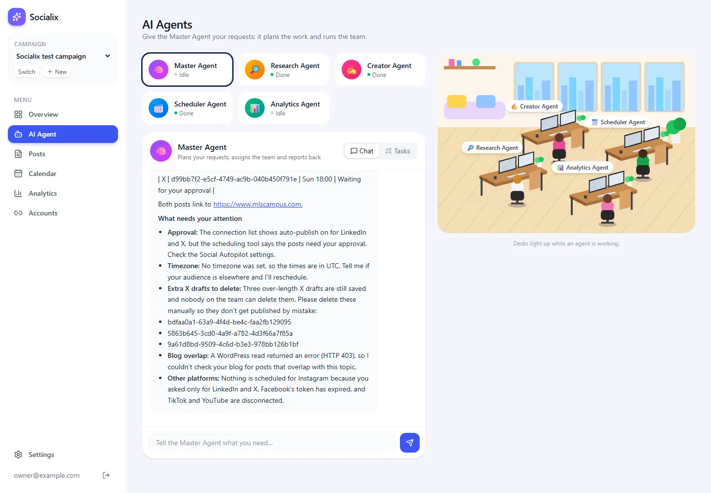

Agent Page
The AI Agent page: agent cards, chat, task board and the live office, kept fresh by polling.
▶ Watch this part (01:01:02)This step builds the page where you actually talk to the team: AI Agent (/dashboard/ai-agent). It shows one card per agent, a chat with the selected agent, a task board, and the office from step 10, whose desks light up while agents work. The page keeps itself up to date by asking the server for fresh data every few seconds (polling).
In the video this chapter is UI only; the agents get a brain in the next chapter. Our app already has the brain, so this page shows the finished version: five small files that split the work between the server and the browser. You will also meet a real crash we hit in Chrome 155 and how a pair of curly braces fixed it.
What the video does
(at 61:09) The presenter explains the plan: all agents in a row at the top so you can chat with them, see their history or change their settings, and the office preview on the right. The office component from the last chapter is reused, not rebuilt.
(at 62:21) He starts a new Claude Code conversation, pastes a prompt (kept in his Eraser document) and attaches the page mockup as an image "just to take a reference". The prompt on screen begins:
Implement the AI Agent page based on the attached mockup. Keep the existing reusable Office Preview component on the right. On the left, display all agents in a single row with their avatars and names. When an agent is selected, show Chat, History, and Settings tabs below, with Chat UI open by default. Highlight the selected agent with a distinct background color and popover. Also add an agent click handler to the Office Preview so clicking any character selects that agent and displays its corresponding tabs and content. Keep the selection synchronized between ...The result (at 63:08) has the heading "AI Agents", four agent cards (Research, Creator, Scheduler, Publisher, each marked "Active"), a panel for the selected agent with Pause and Settings buttons, and the tabs Chat, History and Settings. The chat greets you ("Hi! I'm your Research Agent...") and the input says "Give a task to your Research Agent...". Clicking a character in the office selects that agent too. He points out that History and Settings are placeholders for now (at 63:54).
Two follow-up prompts finish the chapter. The first makes the cards smaller so the chat gets more room ("Lot of space between cards and bcs of that chat box is very small..."). The second (at 64:17) adds the same chat to the Overview page:
Inside overview page, when user click on any agent on office preview section then show chat option on left side for that AI agent, make sure user will not jump to agent page. Just show user profile image and name and same option like chat, history and setting tab. Reuse this component and do not create new one. Also for office preview inside overview make sure to use same component all places(at 65:36) Hovering a character on the Overview page now highlights it, and clicking opens its chat on the left. The code is not pushed yet, because the next chapter connects a real agent SDK.
How our app does it
Our AI Agent page is split into five files. Each one has a single job, and the split follows one rule of the App Router: code that needs the browser (clicks, state, timers) goes in a client component; everything else stays on the server.
| File | Runs on | Job |
|---|---|---|
src/app/dashboard/ai-agent/page.tsx | server | Finds the current campaign, prepares the team list, renders the page header and LiveOffice. |
src/app/dashboard/ai-agent/live-office.tsx | browser | Holds the list of working agents and shares it between the chat (left) and the office (right). |
src/app/dashboard/ai-agent/workspace.tsx | browser | Agent cards, chat, task board, sending messages and polling. |
src/components/markdown.tsx | both | Turns an agent's markdown reply into safe HTML. |
src/app/api/agents/state/route.ts | server | One JSON answer with everything the page shows: statuses, messages, tasks. |
New to server and client components? What they are and why it matters
In the Next.js App Router every component is a server component unless its file starts with "use client". Server components run on the server, can read the database or cookies directly, and send finished HTML to the browser. They cannot use useState, useEffect or click handlers.
Client components are also rendered to HTML first, but then their JavaScript runs in the browser, so they can react to clicks and timers. A server component may render a client component and pass it props, but only plain data (strings, numbers, arrays, plain objects). That is why page.tsx copies just five fields of each agent (line 10) instead of passing the full TEAM object, which contains a function (model).
1. The page (server)
- Create
src/app/dashboard/ai-agent/page.tsx. The folder nameai-agentbecomes the URL/dashboard/ai-agent, and the sidebar from step 08 already links there.
import { redirect } from "next/navigation";
import { getCurrentCampaign } from "@/lib/campaign";
import { TEAM } from "@/lib/ai/agents";
import { PageHeader } from "@/components/ui";
import { LiveOffice } from "./live-office";
export default async function AiAgentPage() {
const campaign = await getCurrentCampaign();
if (!campaign) redirect("/dashboard/campaigns/new");
const team = Object.values(TEAM).map(({ role, name, short, emoji, color }) => ({ role, name, short, emoji, color }));
return (
<>
<PageHeader title="AI Agents" subtitle="Give the Master Agent your requests; it plans the work and runs the team." />
<LiveOffice campaignId={campaign.id} team={team} />
</>
);
}Line by line
| Line(s) | Code | What it does & why |
|---|---|---|
| 1 | import { redirect } from "next/navigation"; | redirect() stops rendering and sends the browser to another URL. Used when there is no campaign yet. |
| 2 | import { getCurrentCampaign } from "@/lib/campaign"; | Reads the current-campaign cookie and loads that campaign (step 07). |
| 3 | import { TEAM } from "@/lib/ai/agents"; | The team definition (names, emoji, colours, models). Step 12 explains it. |
| 4–5 | import { PageHeader } ... import { LiveOffice } from "./live-office"; | The shared page title component (step 08) and the client part of this page, from the same folder. |
| 7 | export default async function AiAgentPage() | The page component. async is allowed in server components, so it can await the database. |
| 8–9 | const campaign = await getCurrentCampaign(); if (!campaign) redirect("/dashboard/campaigns/new"); | Every chat belongs to a campaign. Without one, the owner is sent to create it first. |
| 10 | const team = Object.values(TEAM).map(({ role, name, short, emoji, color }) => ({ ... })); | Turns the TEAM record into an array and keeps only the five display fields. Functions cannot be passed to a client component, and the browser does not need to know which model each agent uses. |
| 13 | <PageHeader title="AI Agents" subtitle="Give the Master Agent your requests; ..." /> | The heading you see at the top of the page. |
| 14 | <LiveOffice campaignId={campaign.id} team={team} /> | Hands the campaign id and the team to the interactive part. |
2. Sharing "who is working" between chat and office
"use client";
import { useState } from "react";
import type { AgentRole } from "@/lib/db/schema";
import { Office } from "@/components/office";
import { AgentWorkspace } from "./workspace";
type Member = { role: AgentRole; name: string; short: string; emoji: string; color: string };
/** The chat on the left and the office on the right; desks light up while their agent works. */
export function LiveOffice({ campaignId, team }: { campaignId: string; team: Member[] }) {
const [working, setWorking] = useState<AgentRole[]>([]);
return (
<div className="grid gap-6 xl:grid-cols-[1.1fr_1fr]">
<AgentWorkspace campaignId={campaignId} team={team} onWorking={setWorking} />
<div className="xl:sticky xl:top-8 xl:self-start">
<Office working={working} className="aspect-[10/7]" />
<p className="mt-3 text-center text-xs text-gray-400">Desks light up while an agent is working.</p>
</div>
</div>
);
}Line by line
| Line(s) | Code | What it does & why |
|---|---|---|
| 1 | "use client"; | Makes this file (and what it imports for rendering) a client component, because it uses useState. |
| 3–6 | import { useState } ... import { AgentWorkspace } from "./workspace"; | React state, the role type, the office from step 10 and the chat workspace. |
| 8 | type Member = { role: AgentRole; name: string; short: string; emoji: string; color: string }; | The shape of one team member as sent by page.tsx. |
| 12 | const [working, setWorking] = useState<AgentRole[]>([]); | The roles that are busy right now. It lives here, in the common parent, because two siblings need it: the workspace writes it and the office reads it ("lifting state up"). |
| 14 | <div className="grid gap-6 xl:grid-cols-[1.1fr_1fr]"> | One column on small screens; from the xl breakpoint (1280px) two columns, the chat slightly wider (1.1 to 1). |
| 15 | <AgentWorkspace ... onWorking={setWorking} /> | Passes the state setter down as a callback. setWorking never changes identity between renders, which matters for the polling effect (see Common mistakes). |
| 16 | <div className="xl:sticky xl:top-8 xl:self-start"> | On wide screens the office sticks to the top while you scroll a long chat. self-start stops the grid from stretching it to the chat's height, which sticky needs. |
| 17–18 | <Office working={working} className="aspect-[10/7]" /> | The office with live data and the 10 : 7 aspect ratio that matches its viewBox, plus a small hint underneath. |
3. The state API (server)
The browser cannot read the database. It asks this route handler instead, and gets everything in one request.
import { NextResponse } from "next/server";
import { and, asc, desc, eq } from "drizzle-orm";
import { getSession } from "@/lib/auth";
import { db, schema } from "@/lib/db";
import { AGENTS, type AgentRole } from "@/lib/db/schema";
import { isRunning } from "@/lib/ai/runner";
/**
* Everything the AI Agent page shows, in one poll: each agent's status, the chosen agent's messages and the
* task board. GET /api/agents/state?campaignId=...&agent=master
*/
export async function GET(req: Request) {
if (!(await getSession())) return NextResponse.json({ error: "Not signed in" }, { status: 401 });
const url = new URL(req.url);
const campaignId = url.searchParams.get("campaignId") ?? "";
const agent = (url.searchParams.get("agent") ?? "master") as AgentRole;
if (!campaignId || !AGENTS.includes(agent)) return NextResponse.json({ error: "Bad request" }, { status: 400 });
const [messages, tasks] = await Promise.all([
db.query.agentMessages.findMany({
where: and(eq(schema.agentMessages.campaignId, campaignId), eq(schema.agentMessages.agent, agent)),
orderBy: asc(schema.agentMessages.createdAt),
}),
db.query.agentTasks.findMany({ where: eq(schema.agentTasks.campaignId, campaignId), orderBy: desc(schema.agentTasks.createdAt), limit: 30 }),
]);
const status = Object.fromEntries(
AGENTS.map((a) => {
const latest = tasks.find((t) => t.agent === a);
const working = isRunning(campaignId, a) || tasks.some((t) => t.agent === a && t.status === "running");
return [a, working ? "running" : latest?.status === "done" ? "done" : latest?.status === "failed" ? "failed" : "idle"];
}),
);
return NextResponse.json({
status,
thinking: isRunning(campaignId, agent),
messages: messages.map((m) => ({ id: m.id, role: m.role, content: m.content, at: m.createdAt })),
tasks: tasks.map((t) => ({ id: t.id, agent: t.agent, title: t.title, status: t.status, result: t.result, at: t.createdAt })),
});
}Line by line
| Line(s) | Code | What it does & why |
|---|---|---|
| 1–6 | import { NextResponse } ... import { isRunning } from "@/lib/ai/runner"; | NextResponse.json() builds JSON responses. Drizzle helpers (and, asc, desc, eq) build the queries. getSession checks the login cookie (step 06). isRunning asks the agent runner whether an agent is producing a reply right now (step 14). |
| 12 | export async function GET(req: Request) | A file named route.ts that exports GET answers GET requests to /api/agents/state. |
| 13 | if (!(await getSession())) return NextResponse.json({ error: "Not signed in" }, { status: 401 }); | API routes are not protected by the dashboard layout, so each one checks the session itself. Without this line anyone could read your chats. |
| 14–17 | const campaignId = url.searchParams.get("campaignId") ?? ""; ... AGENTS.includes(agent) | Reads ?campaignId=...&agent=... from the URL (agent defaults to master) and rejects unknown agents with HTTP 400. |
| 19–25 | const [messages, tasks] = await Promise.all([ ... ]); | Two queries at the same time: all messages of this campaign with this agent, oldest first, and the 30 newest tasks of the campaign. Promise.all waits for both, faster than one after the other. |
| 27–33 | const status = Object.fromEntries(AGENTS.map((a) => { ... })); | Builds { master: "idle", research: "running", ... }. An agent is running if it is answering a chat (isRunning) or has a task with status running; otherwise its latest task decides done or failed; no task means idle. |
| 35–40 | return NextResponse.json({ status, thinking: isRunning(campaignId, agent), messages: ..., tasks: ... }); | The answer. thinking is true while the selected agent is writing a reply (the page shows three animated dots). Messages and tasks are reduced to the fields the page needs. |
4. The workspace: cards, chat, tasks and polling
"use client";
import { useCallback, useEffect, useRef, useState } from "react";
import { ListChecks, MessageSquare, Send } from "lucide-react";
import type { AgentRole } from "@/lib/db/schema";
import { Markdown } from "@/components/markdown";
type Message = { id: string; role: "user" | "assistant"; content: string; at: string };
type Task = { id: string; agent: AgentRole; title: string; status: string; result: string; at: string };
type State = { status: Record<AgentRole, string>; thinking: boolean; messages: Message[]; tasks: Task[] };
type Member = { role: AgentRole; name: string; short: string; emoji: string; color: string };
const STATUS_DOT: Record<string, string> = { running: "bg-brand-500", done: "bg-emerald-500", failed: "bg-red-500", idle: "bg-gray-300" };
const STATUS_TEXT: Record<string, string> = { running: "Running", done: "Done", failed: "Failed", idle: "Idle" };
const SUGGESTIONS: Record<AgentRole, string[]> = {
master: ["Research 3 trending topics in my niche and write a LinkedIn and an X post about the best one", "Plan this week's posts and schedule them", "How is the campaign doing?"],
research: ["What is trending in my niche this week?", "Find 5 popular hashtags for my audience"],
creator: ["Write an X post from the latest research", "Write a LinkedIn post announcing our new blog article"],
scheduler: ["Which accounts are connected?", "Schedule all drafts for the best times this week"],
analytics: ["Give me a status report on the campaign's posts"],
};
export function AgentWorkspace({ campaignId, team, onWorking }: { campaignId: string; team: Member[]; onWorking?: (agents: AgentRole[]) => void }) {
const [agent, setAgent] = useState<AgentRole>("master");
const [tab, setTab] = useState<"chat" | "tasks">("chat");
const [state, setState] = useState<State | null>(null);
const [input, setInput] = useState("");
const [error, setError] = useState("");
const [sending, setSending] = useState(false);
const bottom = useRef<HTMLDivElement>(null);
const load = useCallback(async () => {
// A failed poll (server restarting) is skipped; the next one retries.
const res = await fetch(`/api/agents/state?campaignId=${campaignId}&agent=${agent}`, { cache: "no-store" }).catch(() => null);
if (!res?.ok) return;
const data = (await res.json()) as State;
setState(data);
onWorking?.((Object.keys(data.status) as AgentRole[]).filter((a) => data.status[a] === "running"));
}, [campaignId, agent, onWorking]);
// Poll faster while something is running, like the live office in the video.
const busy = Boolean(state && (state.thinking || Object.values(state.status).includes("running")));
useEffect(() => {
void load();
const id = setInterval(load, busy ? 1500 : 5000);
return () => clearInterval(id);
}, [load, busy]);
// Scroll only the chat box, not the page. (Avoid scrollIntoView: newer Chrome returns a Promise from it,
// which an arrow-bodied effect would hand to React as its cleanup.)
useEffect(() => {
const box = bottom.current?.parentElement;
box?.scrollTo({ top: box.scrollHeight, behavior: "smooth" });
}, [state?.messages.length, state?.thinking]);
async function send(text: string) {
if (!text.trim() || sending) return;
setSending(true);
setError("");
const res = await fetch(`/api/agents/${agent}/chat`, { method: "POST", headers: { "Content-Type": "application/json" }, body: JSON.stringify({ campaignId, message: text }) });
if (!res.ok) setError(((await res.json().catch(() => ({}))) as { error?: string }).error ?? "Could not send");
else setInput("");
setSending(false);
void load();
}
const current = team.find((m) => m.role === agent)!;
const status = state?.status ?? ({} as Record<AgentRole, string>);
return (
<div className="flex flex-col gap-4">
<div className="grid grid-cols-2 gap-3 sm:grid-cols-3">
{team.map((m) => {
const s = status[m.role] ?? "idle";
return (
<button key={m.role} onClick={() => setAgent(m.role)} className={`flex items-center gap-3 rounded-2xl border bg-white p-3 text-left transition ${agent === m.role ? "border-brand-500 ring-2 ring-brand-100" : "border-transparent hover:border-gray-200"}`}>
<span className={`grid size-10 shrink-0 place-items-center rounded-full bg-gradient-to-br text-lg ${m.color} ${s === "running" ? "working" : ""}`}>{m.emoji}</span>
<span className="min-w-0">
<span className="block truncate text-sm font-semibold">{m.name}</span>
<span className="flex items-center gap-1 text-xs text-gray-500">
<span className={`size-1.5 rounded-full ${STATUS_DOT[s]}`} /> {STATUS_TEXT[s]}
</span>
</span>
</button>
);
})}
</div>
<div className="flex min-h-[520px] flex-col rounded-3xl bg-white shadow-sm">
<div className="flex items-center gap-3 border-b border-gray-100 p-4">
<span className={`grid size-11 place-items-center rounded-full bg-gradient-to-br text-xl ${current.color}`}>{current.emoji}</span>
<div className="min-w-0 flex-1">
<p className="font-semibold">{current.name}</p>
<p className="truncate text-xs text-gray-500">{current.short}</p>
</div>
<div className="flex rounded-xl bg-gray-100 p-1 text-sm">
<button onClick={() => setTab("chat")} className={`flex items-center gap-1 rounded-lg px-3 py-1 ${tab === "chat" ? "bg-white shadow-sm" : "text-gray-500"}`}>
<MessageSquare size={14} /> Chat
</button>
<button onClick={() => setTab("tasks")} className={`flex items-center gap-1 rounded-lg px-3 py-1 ${tab === "tasks" ? "bg-white shadow-sm" : "text-gray-500"}`}>
<ListChecks size={14} /> Tasks
</button>
</div>
</div>
{tab === "chat" ? (
<>
<div className="flex-1 space-y-3 overflow-y-auto p-4" style={{ maxHeight: 520 }}>
{(state?.messages.length ?? 0) === 0 && (
<div className="rounded-2xl bg-gray-50 p-4 text-sm text-gray-600">
Hi! I'm your {current.name}. {current.short}.
<div className="mt-3 flex flex-wrap gap-2">
{SUGGESTIONS[agent].map((s) => (
<button key={s} onClick={() => send(s)} className="rounded-full border border-gray-200 bg-white px-3 py-1 text-xs hover:border-brand-500">
{s}
</button>
))}
</div>
</div>
)}
{state?.messages.map((m) => (
<div key={m.id} className={`flex ${m.role === "user" ? "justify-end" : "justify-start"}`}>
<div className={`max-w-[85%] rounded-2xl px-4 py-2 ${m.role === "user" ? "bg-brand-600 text-white" : "bg-gray-50 text-gray-800"}`}>
{m.role === "user" ? <p className="whitespace-pre-wrap text-sm">{m.content}</p> : <Markdown text={m.content} />}
</div>
</div>
))}
{state?.thinking && (
<div className="flex items-center gap-2 text-sm text-gray-500">
<span className="flex gap-1 rounded-2xl bg-gray-50 px-4 py-3">
<span className="dot size-1.5 rounded-full bg-gray-400" />
<span className="dot size-1.5 rounded-full bg-gray-400" />
<span className="dot size-1.5 rounded-full bg-gray-400" />
</span>
{agent === "master" && state.tasks.some((t) => t.status === "running") && <span>Team is working on: {state.tasks.find((t) => t.status === "running")?.title}</span>}
</div>
)}
<div ref={bottom} />
</div>
<form
onSubmit={(e) => {
e.preventDefault();
void send(input);
}}
className="flex items-center gap-2 border-t border-gray-100 p-3"
>
<input value={input} onChange={(e) => setInput(e.target.value)} placeholder={`Tell the ${current.name} what you need…`} className="flex-1 rounded-xl bg-gray-50 px-4 py-2.5 text-sm outline-none focus:ring-2 focus:ring-brand-100" />
<button type="submit" aria-label="Send" title="Send" disabled={sending || state?.thinking} className="grid size-10 place-items-center rounded-xl bg-brand-600 text-white disabled:opacity-40">
<Send size={16} />
</button>
</form>
{error && <p className="px-4 pb-3 text-sm text-red-600">{error}</p>}
</>
) : (
<div className="flex-1 overflow-y-auto p-4" style={{ maxHeight: 580 }}>
{(state?.tasks.length ?? 0) === 0 ? (
<p className="py-10 text-center text-sm text-gray-400">No tasks yet. Give the Master Agent a request and it will split it into tasks here.</p>
) : (
<ul className="space-y-2">
{state!.tasks.map((t) => (
<li key={t.id} className="rounded-2xl border border-gray-100 p-3">
<div className="flex items-center justify-between gap-2">
<span className="text-sm font-medium">
{team.find((m) => m.role === t.agent)?.emoji} {t.title}
</span>
<span className="flex items-center gap-1 text-xs text-gray-500">
<span className={`size-1.5 rounded-full ${STATUS_DOT[t.status === "queued" ? "idle" : t.status]}`} /> {t.status}
</span>
</div>
{t.result && (
<details className="mt-2 text-sm text-gray-600">
<summary className="cursor-pointer text-xs text-brand-600">Result</summary>
<Markdown text={t.result} />
</details>
)}
</li>
))}
</ul>
)}
</div>
)}
</div>
</div>
);
}Line by line
| Line(s) | Code | What it does & why |
|---|---|---|
| 1 | "use client"; | This file uses state, effects, timers and clicks, so it must run in the browser. |
| 3 | import { useCallback, useEffect, useRef, useState } from "react"; | The four React hooks used below: memoised functions, side effects, a reference to a DOM element, and state. |
| 4 | import { ListChecks, MessageSquare, Send } from "lucide-react"; | Three icons for the Tasks tab, the Chat tab and the send button. |
| 8–11 | type Message = ...; type Task = ...; type State = ...; type Member = ...; | TypeScript shapes of the JSON from the state API. State mirrors exactly what route.ts returns. |
| 13–14 | const STATUS_DOT ... const STATUS_TEXT ... | Lookup tables: status to dot colour (brand blue, green, red, grey) and to label ("Running", "Done", ...). |
| 16–22 | const SUGGESTIONS: Record<AgentRole, string[]> = { ... }; | Example requests shown as buttons in an empty chat, per agent. A beginner can click one instead of wondering what to type. |
| 24 | export function AgentWorkspace({ campaignId, team, onWorking }: ...) | The component. onWorking is optional (?) so the workspace can also be used without an office. |
| 25–31 | const [agent, setAgent] = useState<AgentRole>("master"); ... const bottom = useRef<HTMLDivElement>(null); | Local state: selected agent (Master by default), open tab, last server answer, input text, error message, and whether a message is being sent. bottom points at an empty div at the end of the chat. |
| 33–40 | const load = useCallback(async () => { ... }, [campaignId, agent, onWorking]); | One poll: fetch the state, store it, and report the running agents to the parent. cache: "no-store" makes sure the browser never answers from its cache. .catch(() => null) turns a network failure (for example the server restarting) into null, and line 36 then skips this round. useCallback keeps the same function between renders unless the selected agent or campaign changes. |
| 43 | const busy = Boolean(state && (state.thinking || Object.values(state.status).includes("running"))); | True while anything is happening: the selected agent is replying or any agent has a running task. |
| 44–48 | useEffect(() => { void load(); const id = setInterval(load, busy ? 1500 : 5000); return () => clearInterval(id); }, [load, busy]); | The polling loop. It loads once immediately, then every 5 seconds, or every 1.5 seconds while busy so progress feels live. The function returned at the end is the cleanup: React calls it before re-running the effect (when busy or load changes) and when the page is left, so old timers never pile up. void says "I start this promise on purpose and don't wait for it". |
| 50–55 | useEffect(() => { const box = bottom.current?.parentElement; box?.scrollTo({ top: box.scrollHeight, behavior: "smooth" }); }, [...]); | Scrolls the chat box (the parent of the bottom div) to its end whenever a message arrives or the thinking dots appear. Note the curly braces: the effect returns nothing. This is the fix for the Chrome 155 crash explained below. |
| 57–66 | async function send(text: string) { ... fetch(`/api/agents/${agent}/chat`, { method: "POST", ... }) ... } | Sends a message. It ignores empty text and double clicks (sending), posts { campaignId, message } to the chat route (step 14), shows the server's error if any (for example "This agent is still working on the last message."), clears the input on success, and polls right away instead of waiting up to 5 seconds. |
| 68–69 | const current = team.find((m) => m.role === agent)!; const status = state?.status ?? ...; | The selected agent's details, and the statuses (empty until the first poll returns). The ! tells TypeScript the agent is always in the team. |
| 73–88 | <div className="grid grid-cols-2 gap-3 sm:grid-cols-3"> {team.map((m) => ...)} | The agent cards, two per row on phones, three from the sm breakpoint. The selected card gets a brand border and ring. An agent that is running gets the working class from step 10, so its avatar pulses. Each card shows a coloured status dot and the label. |
| 90–105 | <div className="flex min-h-[520px] flex-col rounded-3xl bg-white shadow-sm"> ... | The panel: the selected agent's avatar, name and one-line description, and a two-button tab switch (Chat, Tasks). The active tab is white with a shadow. |
| 109 | <div className="flex-1 space-y-3 overflow-y-auto p-4" style={{ maxHeight: 520 }}> | The scrollable chat box. overflow-y-auto plus a maximum height make it scroll inside itself, which is the box the scroll effect moves. |
| 110–121 | {(state?.messages.length ?? 0) === 0 && ( ... SUGGESTIONS[agent].map ... )} | Empty chat: a greeting ("Hi! I'm your Master Agent. ...") and the suggestion buttons. Clicking one sends it. ' is how JSX writes an apostrophe inside text. |
| 122–128 | {state?.messages.map((m) => ( ... m.role === "user" ? <p ...> : <Markdown text={m.content} /> ... ))} | The conversation. Your messages are right-aligned blue bubbles shown as plain text (whitespace-pre-wrap keeps your line breaks). Agent replies are left-aligned grey bubbles rendered from markdown. |
| 129–138 | {state?.thinking && ( ... <span className="dot ..." /> ... )} | Three bouncing dots while the agent works (the .dot animation in globals.css). For the Master, it also names the task the team is on: "Team is working on: ...". |
| 139 | <div ref={bottom} /> | An invisible marker at the end of the messages. The scroll effect uses its parent, the chat box. |
| 141–152 | <form onSubmit={(e) => { e.preventDefault(); void send(input); }} ...> | The input and send button. preventDefault() stops the browser from reloading the page on submit. The button is disabled while sending or while the agent is still thinking. |
| 153 | {error && <p className="px-4 pb-3 text-sm text-red-600">{error}</p>} | Shows a send error in red under the form. |
| 156–181 | <div className="flex-1 overflow-y-auto p-4" style={{ maxHeight: 580 }}> ... state!.tasks.map ... | The Tasks tab: every task the Master Agent created (step 13), with the agent's emoji, title and status dot. A finished task has a collapsible "Result" (<details>) rendered as markdown. With no tasks it explains how to get some. |
New to polling? What it is and why we use it
Polling means the browser asks the server "anything new?" on a timer. It is the simplest way to show progress from work that runs on the server: no WebSocket, no extra service. The cost is a small request every few seconds. We make it cheaper by polling slowly (5 s) when nothing happens and quickly (1.5 s) only while an agent is busy. The video's app shows the same live behaviour; in step 14 it uses a background job service, and we use an in-process runner plus this polling.
busy, so React swaps the timer whenever the page becomes busy or calm.5. Safe markdown for agent replies
Claude answers in markdown (lists, **bold**, links). This tiny renderer turns that into HTML without adding a library.
/** A tiny, safe markdown renderer for chat replies: paragraphs, lists, bold, italics, inline code and links. */
function escape(s: string): string {
return s.replace(/&/g, "&").replace(/</g, "<").replace(/>/g, ">");
}
function inline(s: string): string {
return escape(s)
.replace(/`([^`]+)`/g, '<code class="rounded bg-gray-100 px-1">$1</code>')
.replace(/\*\*([^*]+)\*\*/g, "<strong>$1</strong>")
.replace(/(^|[^*])\*([^*]+)\*/g, "$1<em>$2</em>")
.replace(/\[([^\]]+)\]\((https?:\/\/[^\s)]+)\)/g, '<a href="$2" target="_blank" rel="noreferrer">$1</a>')
.replace(/(^|\s)(https?:\/\/[^\s<]+)/g, '$1<a href="$2" target="_blank" rel="noreferrer">$2</a>');
}
export function Markdown({ text }: { text: string }) {
const html: string[] = [];
let list: "ul" | "ol" | null = null;
const close = () => {
if (list) html.push(`</${list}>`);
list = null;
};
for (const raw of text.split("\n")) {
const line = raw.trimEnd();
const bullet = /^\s*[-*•]\s+(.*)$/.exec(line);
const numbered = /^\s*\d+[.)]\s+(.*)$/.exec(line);
if (bullet || numbered) {
const kind = bullet ? "ul" : "ol";
if (list !== kind) {
close();
html.push(`<${kind}>`);
list = kind;
}
html.push(`<li>${inline((bullet ?? numbered)![1]!)}</li>`);
} else if (line.trim() === "") {
close();
} else {
close();
const heading = /^#{1,4}\s+(.*)$/.exec(line);
html.push(heading ? `<p><strong>${inline(heading[1]!)}</strong></p>` : `<p>${inline(line)}</p>`);
}
}
close();
return <div className="prose-chat text-sm leading-relaxed" dangerouslySetInnerHTML={{ __html: html.join("") }} />;
}Line by line
| Line(s) | Code | What it does & why |
|---|---|---|
| 3–5 | function escape(s: string): string { return s.replace(/&/g, "&")... } | The safety step. Every &, < and > in the reply becomes an HTML entity first, so text like <script> is displayed, never executed. This matters because replies can contain text from web pages the Research Agent read. |
| 7–14 | function inline(s: string): string { return escape(s).replace(...)... } | Inline formatting on the already escaped text: `code`, **bold**, *italic*, [text](https://...) links, and bare https:// URLs. Links only accept http/https, open in a new tab, and use rel="noreferrer". |
| 16–22 | export function Markdown({ text }) { const html: string[] = []; let list ... const close = () => { ... } } | Builds the HTML as an array of strings. list remembers whether we are inside a bullet list (ul) or a numbered list (ol); close() ends it. |
| 23–34 | for (const raw of text.split("\n")) { ... bullet ... numbered ... } | Goes line by line. Lines starting with -, * or • become bullet items; lines like 1. or 2) become numbered items. A new list starts when the kind changes. |
| 35–41 | } else if (line.trim() === "") { close(); } else { ... heading ... } | A blank line ends a list. Any other line becomes a paragraph; a heading line (# to ####) becomes a bold paragraph, which looks right in a small chat bubble. |
| 44 | return <div className="prose-chat ..." dangerouslySetInnerHTML={{ __html: html.join("") }} />; | Inserts the HTML. React calls this prop "dangerous" on purpose: it is only safe because every piece of text went through escape() first. |

Markdown with bold headings, bullets and a link.
- Five cards (Master, Research, Creator, Scheduler, Analytics) with a status dot; Master is selected.
- An empty chat shows "Hi! I'm your Master Agent. ..." and clickable suggestions.
- After you send a message, three dots appear within about 1.5 seconds; the Master's card and the working desks pulse; the reply appears without reloading the page.
- The Tasks tab lists the tasks the Master created, each with a status and a Result.
- In the browser's developer tools (Network tab) a request to
/api/agents/staterepeats every 5 seconds, faster while an agent is busy.
A real bug: "This page couldn't load" in Chrome 155
Our earlier version scrolled the chat with a one-line effect. It looked harmless and worked in our automated browser test, but the owner's Chrome showed Next.js's error screen "This page couldn't load" on the AI Agent page. The browser console said:
TypeError: i is not a functionHere is the broken effect (simplified):
useEffect(() => bottom.current?.scrollIntoView(), [state?.messages.length]);Why it broke, step by step:
- An arrow function without curly braces returns its expression. So this effect returns whatever
scrollIntoView()returns. - React treats a value returned from a useEffect as the cleanup function and calls it before the effect runs again.
- Older browsers return
undefinedfromscrollIntoView(), so there was no cleanup and nothing happened. Chrome 155 returns a Promise. - On the next message React tried to call that Promise as a function. In the minified production code the variable is called
i, hence "i is not a function". The error crashes the page, and Next.js shows its error screen.
Our test (a Playwright browser test) used an older Chromium that still returned undefined, so it passed. The fix is in workspace.tsx lines 50–55: curly braces so the effect returns nothing, and box.scrollTo(...) on the chat box instead of scrollIntoView(), which also stops the whole page from jumping. In the same change a failed poll became harmless with .catch(() => null) (line 35).
- "This page couldn't load" with
TypeError: i is not a function. An effect written asuseEffect(() => something())returns that value to React. Use braces:useEffect(() => { something(); }). Watch out for any browser API that may start returning a Promise. - Polling every few milliseconds. If the parent passes an inline callback (
onWorking={(a) => setWorking(a)}), it is a new function on each render, soloadchanges, the effect re-runs, and a fresh request fires after every render. Pass the stablesetWorkingas we do, or wrap the callback inuseCallback. - Forgetting the cleanup
clearInterval. Each change of agent would add another timer, and the page would poll two, three, four times as often. - Getting 401 from
/api/agents/state. You are not signed in (or the session cookie expired). Sign in again; the route checks the session on every request. - Passing
TEAMdirectly to a client component. Next.js refuses to serialise functions ("Functions cannot be passed directly to Client Components"). Copy plain fields, as line 10 of page.tsx does. - Rendering agent replies with
dangerouslySetInnerHTMLwithout escaping. Text from the web could inject HTML. Always escape first.
- Tabs: the video has Chat, History and Settings (the last two are placeholders at this point). Ours has Chat and Tasks; agent settings such as auto-publish live on the Settings page (step 20).
- Agents: the video shows four agents here and adds the Master Agent in step 13. Ours shows all five from the start, with Master selected by default.
- Office interaction: in the video, clicking a character selects that agent, and the Overview page can open an agent's chat on the left. Our office only displays status; you chat on this page.
- Pause button: the video's panel has Pause and Settings buttons. Ours has none.
- Freshness: when the video connects its chat to a real agent in the next chapter, Claude Code notes that the conversation is kept in the browser only and is lost on reload (at 71:35). Ours stores every message in Postgres and polls them, so a reload or a second tab shows the same conversation.
- The video builds the AI Agent page from a prompt plus a mockup image, reusing the office component, then adds the same chat to the Overview page.
- Our page splits into a server page, a client
LiveOfficethat holds the "working" list, theAgentWorkspace, a safeMarkdownrenderer and theGET /api/agents/stateroute. - The workspace polls every 5 seconds, every 1.5 seconds while busy, and the effect's cleanup clears the old timer.
- The state route checks the session, loads messages and tasks in parallel and derives each agent's status, with "running" first.
- Bug 3: an arrow-bodied effect returned Chrome 155's Promise from
scrollIntoView()to React, which crashed the page. Braces andbox.scrollTo()fixed it.